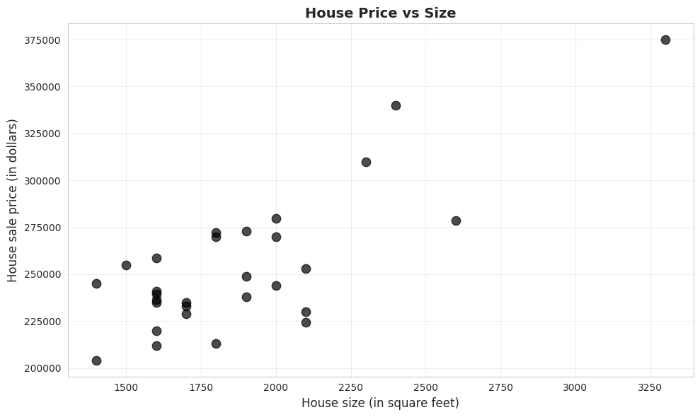
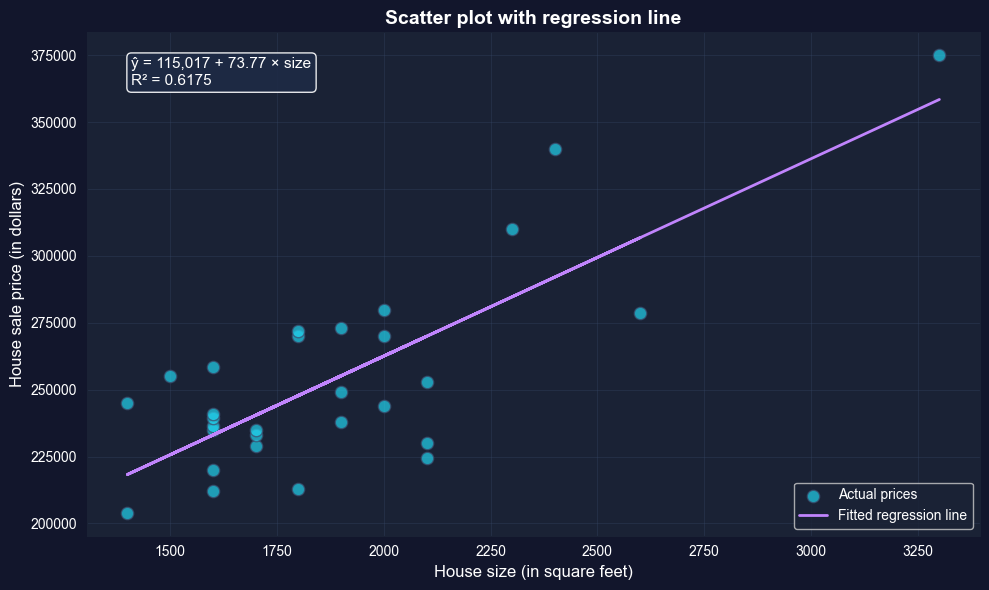
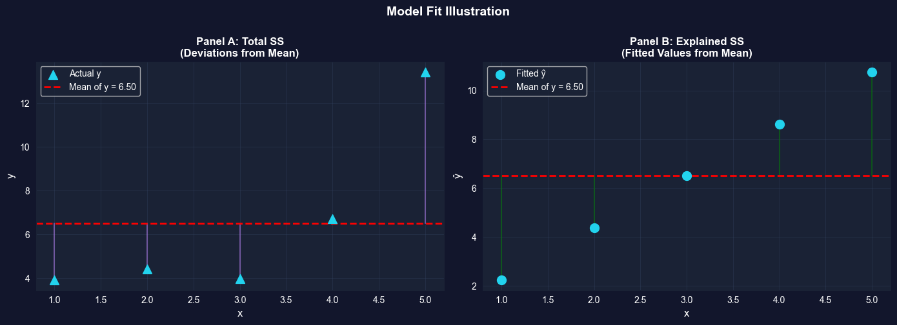
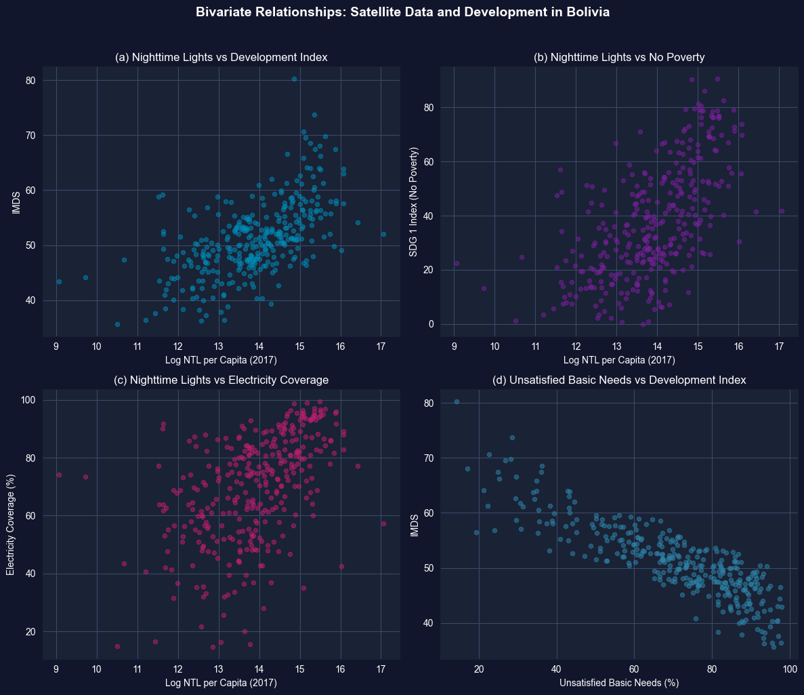

This notebook provides an interactive introduction to bivariate data analysis and simple linear regression using Python. You’ll learn how to summarize relationships between two variables using correlation, scatter plots, and regression analysis. All code runs directly in Google Colab without any local setup.
Bivariate data involves observations on two variables—for example, house prices and house sizes, or income and education. This chapter teaches you how to summarize and analyze relationships between two variables using correlation and regression.
What you’ll learn:
Summarize bivariate relationships using two-way tabulations and scatterplots
Calculate and interpret correlation coefficients and understand their relationship to covariance
Estimate and interpret regression lines using ordinary least squares (OLS)
Evaluate model fit using R-squared, standard error, and variation decomposition
Make predictions and identify outliers in regression analysis
Understand the critical distinction between association and causation
Apply nonparametric regression methods to check linearity assumptions
Datasets used:
AED_HOUSE.DTA: House prices and characteristics for 29 houses sold in Central Davis, California in 1999 (price, size, bedrooms, bathrooms, lot size, age)
Chapter outline:
5.1 Example - House Price and Size
5.2 Two-Way Tabulation
5.3 Two-Way Scatter Plot
5.4 Sample Correlation
5.5 Regression Line
5.6 Measures of Model Fit
5.7 Computer Output Following Regression
5.8 Prediction and Outlying Observations
5.9 Regression and Correlation
5.10 Causation
5.11 Nonparametric Regression
Setup
First, we import the necessary Python packages and configure the environment for reproducibility. All data will stream directly from GitHub.
# Import required packagesimport numpy as npimport pandas as pdimport matplotlib.pyplot as pltimport seaborn as snsimport statsmodels.api as smfrom statsmodels.formula.api import olsfrom statsmodels.nonparametric.smoothers_lowess import lowessfrom scipy import statsfrom scipy.ndimage import gaussian_filter1dimport randomimport os# Set random seeds for reproducibilityRANDOM_SEED =42random.seed(RANDOM_SEED)np.random.seed(RANDOM_SEED)os.environ['PYTHONHASHSEED'] =str(RANDOM_SEED)# GitHub data URLGITHUB_DATA_URL ="https://raw.githubusercontent.com/quarcs-lab/data-open/master/AED/"# Set plotting style (dark theme matching book design)plt.style.use('dark_background')sns.set_style("darkgrid")plt.rcParams.update({'axes.facecolor': '#1a2235','figure.facecolor': '#12162c','grid.color': '#3a4a6b','figure.figsize': (10, 6),'text.color': 'white','axes.labelcolor': 'white','xtick.color': 'white','ytick.color': 'white','axes.edgecolor': '#1a2235',})print("Setup complete! Ready to explore bivariate data analysis.")
Setup complete! Ready to explore bivariate data analysis.
5.1 Example - House Price and Size
We begin by loading and examining data on house prices and sizes from 29 houses sold in Central Davis, California in 1999. This dataset will serve as our main example throughout the chapter.
Why this dataset?
Small enough to see individual observations
Large enough to demonstrate statistical relationships
Economically meaningful: housing is a major component of wealth
Clear relationship: larger houses tend to cost more
# Load the house datadata_house = pd.read_stata(GITHUB_DATA_URL +'AED_HOUSE.DTA')print("Data loaded successfully!")print(f"Number of observations: {len(data_house)}")print(f"Number of variables: {data_house.shape[1]}")print(f"\nVariables: {', '.join(data_house.columns.tolist())}")
Data loaded successfully!
Number of observations: 29
Number of variables: 8
Variables: price, size, bedrooms, bathrooms, lotsize, age, monthsold, list
# Display the complete dataset (Table 5.1)print("="*70)print("TABLE 5.1: Complete Dataset")print("="*70)print(data_house.to_string())
======================================================================
TABLE 5.2: Summary Statistics
======================================================================
price size
count 29.000000 29.000000
mean 253910.344828 1882.758621
std 37390.710695 398.272130
min 204000.000000 1400.000000
25% 233000.000000 1600.000000
50% 244000.000000 1800.000000
75% 270000.000000 2000.000000
max 375000.000000 3300.000000
Price Statistics:
Mean: $253,910.34
Median: $244,000.00
Min: $204,000.00
Max: $375,000.00
Std Dev: $37,390.71
Size Statistics:
Mean: 1,883 sq ft
Median: 1,800 sq ft
Min: 1,400 sq ft
Max: 3,300 sq ft
Std Dev: 398 sq ft
Key Concept 5.1: Summary Statistics for Bivariate Data
Summary statistics describe the center, spread, and range of each variable before examining their relationship. For bivariate analysis, compute the mean, median, standard deviation, minimum, and maximum of both variables. Comparing means and medians reveals skewness; standard deviations indicate variability. These univariate summaries provide essential context for interpreting correlation and regression results.
What do these numbers tell us about the Davis housing market (1999)?
Price Statistics:
Mean = $253,910: Average house price in the sample
Median = $244,000: Middle value (half above, half below)
Range: $204,000 to $375,000 (spread of $171,000)
Std Dev = $37,391: Typical deviation from the mean
Size Statistics:
Mean = 1,883 sq ft: Average house size
Median = 1,800 sq ft: Middle value
Range: 1,400 to 3,300 sq ft (spread of 1,900 sq ft)
Std Dev = 398 sq ft: Typical deviation from the mean
Key insights:
Both distributions are fairly symmetric (means close to medians)
Substantial variation in both price and size (good for regression!)
The price coefficient of variation (CV = 0.15) and size CV (0.21) show moderate variability
Moving from univariate to bivariate: In Chapter 2, we looked at single variables. Now we ask: how do these two variables move together?
Economic context: These are moderate-sized homes in a California college town (UC Davis), with typical prices for the late 1990s.
Key observations:
House prices range from $204,000 to $375,000 (mean: $253,910)
House sizes range from 1,400 to 3,300 square feet (mean: 1,883 sq ft)
Both variables show substantial variation, which is good for regression analysis
The data appear to be reasonably symmetric (means close to medians)
5.2 Two-Way Tabulation
A two-way tabulation (or crosstabulation) shows how observations are distributed across combinations of two categorical variables. For continuous variables like price and size, we first create categorical ranges.
Why use tabulation?
Provides a quick summary of the relationship
Useful for discrete or categorical data
Can reveal patterns before formal analysis
# Create categorical variablesprice_range = pd.cut(price, bins=[0, 249999, np.inf], labels=['< $250,000', '≥ $250,000'])size_range = pd.cut(size, bins=[0, 1799, 2399, np.inf], labels=['< 1,800', '1,800-2,399', '≥ 2,400'])# Create two-way table print("="*70)print("Two-Way Tabulation of Price and Size")print("="*70)crosstab = pd.crosstab(price_range, size_range, margins=True)print(crosstab)print("\nInterpretation:")print("- 11 houses are both low-priced and small")print("- 0 houses are both low-priced and large (≥ 2,400 sq ft)")print("- 3 houses are both high-priced and large")print("- Pattern suggests positive association: larger houses tend to be more expensive")
======================================================================
Two-Way Tabulation of Price and Size
======================================================================
size < 1,800 1,800-2,399 ≥ 2,400 All
price
< $250,000 11 6 0 17
≥ $250,000 2 7 3 12
All 13 13 3 29
Interpretation:
- 11 houses are both low-priced and small
- 0 houses are both low-priced and large (≥ 2,400 sq ft)
- 3 houses are both high-priced and large
- Pattern suggests positive association: larger houses tend to be more expensive
Key Concept 5.2: Two-Way Tabulations
Two-way tabulations show the joint distribution of two categorical variables. Expected frequencies (calculated assuming independence) provide the basis for Pearson’s chi-squared test of statistical independence. The crosstabulation reveals patterns: no low-priced large houses suggests a positive association between size and price.
What does this crosstab tell us?
Looking at the table:
11 houses are both small (< 1,800 sq ft) AND low-priced (< $250,000)
0 houses are both large (≥ 2,400 sq ft) AND low-priced
3 houses are both large (≥ 2,400 sq ft) AND high-priced (≥ $250,000)
6 houses are medium-sized (1,800-2,399 sq ft) AND low-priced
The pattern reveals:
Positive association: Most observations cluster in the “small and cheap” or “large and expensive” cells
No counterexamples: We never see “large and cheap” houses (the bottom-right cell is empty)
Imperfect relationship: Some medium-sized houses are low-priced (6 houses), some are high-priced (7 houses)
Limitation of tabulation:
We lose information by categorizing continuous variables
We can’t quantify the strength of the relationship
We can’t make precise predictions
Next step: Use the correlation coefficient and regression to measure the relationship more precisely using the full continuous data.
From Categorical to Continuous:
Crosstabulation is useful but has limitations:
Information loss: We convert continuous data (exact prices/sizes) into categories
Arbitrary bins: Results can change depending on where we draw category boundaries
No precise measurement: Can’t quantify exact strength of relationship
Solution: Use the full continuous data with correlation and regression to:
Preserve all information in the original measurements
Get precise, interpretable measures (r, slope)
Make specific predictions for any value of x
5.3 Two-Way Scatter Plot
A scatter plot is the primary visual tool for examining the relationship between two continuous variables. Each point represents one observation, with x-coordinate showing size and y-coordinate showing price.
What to look for:
Direction: Does y increase or decrease as x increases?
Strength: How closely do points follow a pattern?
Form: Is the relationship linear or curved?
Outliers: Are there unusual observations far from the pattern?
# Scatter plot of price vs sizefig, ax = plt.subplots(figsize=(10, 6))ax.scatter(size, price, s=80, alpha=0.7, color='#22d3ee', edgecolor='#3a4a6b')ax.set_xlabel('House size (in square feet)', fontsize=12)ax.set_ylabel('House sale price (in dollars)', fontsize=12)ax.set_title('House Price vs Size', fontsize=14, fontweight='bold')ax.grid(True, alpha=0.3)plt.tight_layout()plt.show()print("\nWhat the scatter plot shows:")print("✓ Positive relationship: Larger houses tend to have higher prices")print("✓ Roughly linear: Points follow an upward-sloping pattern")print("✓ Moderate scatter: Not all points lie exactly on a line")print("✓ No obvious outliers: All points fit the general pattern")

What the scatter plot shows:
✓ Positive relationship: Larger houses tend to have higher prices
✓ Roughly linear: Points follow an upward-sloping pattern
✓ Moderate scatter: Not all points lie exactly on a line
✓ No obvious outliers: All points fit the general pattern
Key Concept 5.3: Scatterplots and Relationships
Scatterplots provide visual evidence of relationships between two continuous variables. They reveal the direction (positive/negative), strength (tight/loose clustering), form (linear/curved), and outliers of the relationship. The house price-size scatterplot shows a strong, positive, roughly linear relationship with no obvious outliers.
Visual vs. Quantitative Analysis:
The scatter plot provides qualitative insight (direction, form, outliers), but we need quantitative measures to:
Communicate precisely: “Strong positive relationship” is vague; “r = 0.79” is specific
Compare across studies: Can’t compare scatter plots directly across datasets
Test hypotheses: Need numerical values for statistical inference (Chapter 7)
Make predictions: Visual estimates from graphs are imprecise
Next: We’ll quantify this relationship using the correlation coefficient.
What patterns do we observe?
1. Direction: Positive relationship
As house size increases (moving right), house price increases (moving up)
This makes economic sense: bigger houses should cost more
2. Form: Roughly linear
Points follow an upward-sloping pattern
No obvious curvature (e.g., not exponential or U-shaped)
A straight line appears to be a reasonable summary
3. Strength: Moderate to strong
Points cluster fairly closely around an imaginary line
Not perfect (some scatter), but clear pattern visible
We’ll quantify this with the correlation coefficient
4. Outliers: None obvious
No houses wildly far from the general pattern
All observations seem consistent with the relationship
Comparison to univariate analysis (Chapter 2):
Univariate: Histogram shows distribution of one variable
Bivariate: Scatter plot shows relationship between two variables
where \(s_{xy}\) is the sample covariance, and \(s_x\), \(s_y\) are sample standard deviations.
Key Properties of Correlation:
Understanding these properties helps avoid common misinterpretations:
Unit-free: r = 0.79 whether we measure price in dollars, thousands, or millions
Bounded: Always between -1 and +1 (unlike covariance, which is unbounded)
Symmetric: r(price, size) = r(size, price) — order doesn’t matter
Only measures linear relationships: Can miss curved, U-shaped, or other nonlinear patterns
Sensitive to outliers: One extreme point can dramatically change r
Limitation: Correlation is a summary measure but doesn’t provide predictions. For that, we need regression.
# Compute correlation and covariancecov_matrix = data_house[['price', 'size']].cov()corr_matrix = data_house[['price', 'size']].corr()print("="*70)print("COVARIANCE AND CORRELATION")print("="*70)print("\nCovariance matrix:")print(cov_matrix)print("\nCorrelation matrix:")print(corr_matrix)r = corr_matrix.loc['price', 'size']print(f"\nCorrelation coefficient: r = {r:.4f}")print(f"\nInterpretation:")print(f" The correlation of {r:.4f} indicates a strong positive linear")print(f" relationship between house price and size.")print(f" About {r**2:.1%} of the variation in price is linearly associated")print(f" with variation in size.")
======================================================================
COVARIANCE AND CORRELATION
======================================================================
Covariance matrix:
price size
price 1.398065e+09 1.170161e+07
size 1.170161e+07 1.586207e+05
Correlation matrix:
price size
price 1.000000 0.785782
size 0.785782 1.000000
Correlation coefficient: r = 0.7858
Interpretation:
The correlation of 0.7858 indicates a strong positive linear
relationship between house price and size.
About 61.7% of the variation in price is linearly associated
with variation in size.
Key Concept 5.4: The Correlation Coefficient
The correlation coefficient (r) is a scale-free measure of linear association ranging from -1 (perfect negative) to +1 (perfect positive). A correlation of 0 indicates no linear relationship. For house price and size, r = 0.786 indicates strong positive correlation. The correlation is unit-free, symmetric, and measures only linear relationships.
What does r = 0.7858 mean?
1. Strength of linear association:
r = 0.7858 indicates a strong positive linear relationship
Scale reference:
|r| < 0.3: weak
0.3 ≤ |r| < 0.7: moderate
|r| ≥ 0.7: strong
Our value (0.79) is well into the “strong” range
2. Direction:
Positive: Larger houses are associated with higher prices
If r were negative, larger houses would be associated with lower prices (unlikely for housing!)
3. Variance explained (preview):
r² = (0.7858)² = 0.617 = 61.7%
About 62% of price variation is linearly associated with size variation
The remaining 38% is due to other factors (location, age, condition, etc.)
4. Properties of correlation:
Unit-free: Same value whether we measure price in dollars or thousands of dollars
Linear measure: Detects linear relationships, not curves
Comparison to Chapter 2 (univariate):
Chapter 2: Standard deviation measures spread of ONE variable
Chapter 5: Correlation measures how TWO variables move together
Both are standardized measures (unit-free)
Economic interpretation: The strong correlation confirms what we saw in the scatter plot: house size is a major determinant of house price, but it’s not the only factor.
Illustration: Different Correlation Patterns
To build intuition, let’s visualize simulated data with different correlation coefficients.
# Different correlation patternsnp.random.seed(12345)n =30x = np.random.normal(3, 1, n)u1 = np.random.normal(0, 0.8, n)y1 =3+ x + u1 # Strong positive correlationu2 = np.random.normal(0, 2, n)y2 =3+ x + u2 # Moderate positive correlationy3 =5+ u2 # Zero correlationy4 =10- x - u2 # Moderate negative correlationcorrelations = [ np.corrcoef(x, y1)[0, 1], np.corrcoef(x, y2)[0, 1], np.corrcoef(x, y3)[0, 1], np.corrcoef(x, y4)[0, 1]]fig, axes = plt.subplots(2, 2, figsize=(14, 12))axes = axes.flatten()datasets = [(x, y1, 'Panel A: Strong Positive'), (x, y2, 'Panel B: Moderate Positive'), (x, y3, 'Panel C: Zero Correlation'), (x, y4, 'Panel D: Moderate Negative')]for idx, (ax, (x_data, y_data, title), corr) inenumerate(zip(axes, datasets, correlations)): ax.scatter(x_data, y_data, s=60, alpha=0.7, color='#22d3ee', edgecolor='#3a4a6b') ax.set_xlabel('x', fontsize=11) ax.set_ylabel('y', fontsize=11) ax.set_title(f'{title}\nr = {corr:.2f}', fontsize=12, fontweight='bold') ax.grid(True, alpha=0.3)plt.suptitle('Different Correlation Patterns', fontsize=14, fontweight='bold', y=0.995)plt.tight_layout()plt.show()print("\nKey observations:")print("• Panel A (r ≈ 0.78): Points cluster tightly around an upward slope")print("• Panel B (r ≈ 0.44): More scatter, but still positive relationship")print("• Panel C (r ≈ 0.00): No systematic pattern")print("• Panel D (r ≈ -0.53): Points follow a downward slope")
Key observations:
• Panel A (r ≈ 0.78): Points cluster tightly around an upward slope
• Panel B (r ≈ 0.44): More scatter, but still positive relationship
• Panel C (r ≈ 0.00): No systematic pattern
• Panel D (r ≈ -0.53): Points follow a downward slope
5.5 Regression Line
The regression line provides the “best-fitting” linear summary of the relationship between y (dependent variable) and x (independent variable):
\[\hat{y} = b_1 + b_2 x\]
where:
\(\hat{y}\) = predicted (fitted) value of y
\(b_1\) = intercept (predicted y when x = 0)
\(b_2\) = slope (change in y for one-unit increase in x)
Ordinary Least Squares (OLS) chooses \(b_1\) and \(b_2\) to minimize the sum of squared residuals:
Transition Note: Correlation measures the strength of association, but doesn’t provide a prediction equation. Now we turn to regression analysis, which fits a line to predict y from x and quantifies how much y changes per unit change in x.
======================================================================
REGRESSION RESULTS: price ~ size
======================================================================
OLS Regression Results
==============================================================================
Dep. Variable: price R-squared: 0.617
Model: OLS Adj. R-squared: 0.603
Method: Least Squares F-statistic: 43.58
Date: Tue, 17 Feb 2026 Prob (F-statistic): 4.41e-07
Time: 22:12:31 Log-Likelihood: -332.05
No. Observations: 29 AIC: 668.1
Df Residuals: 27 BIC: 670.8
Df Model: 1
Covariance Type: nonrobust
==============================================================================
coef std err t P>|t| [0.025 0.975]
------------------------------------------------------------------------------
Intercept 1.15e+05 2.15e+04 5.352 0.000 7.09e+04 1.59e+05
size 73.7710 11.175 6.601 0.000 50.842 96.700
==============================================================================
Omnibus: 0.576 Durbin-Watson: 1.219
Prob(Omnibus): 0.750 Jarque-Bera (JB): 0.638
Skew: -0.078 Prob(JB): 0.727
Kurtosis: 2.290 Cond. No. 9.45e+03
==============================================================================
Notes:
[1] Standard Errors assume that the covariance matrix of the errors is correctly specified.
[2] The condition number is large, 9.45e+03. This might indicate that there are
strong multicollinearity or other numerical problems.
Key Concept 5.5: Ordinary Least Squares
The method of ordinary least squares (OLS) chooses the regression line to minimize the sum of squared residuals. This yields formulas for the slope (b₂ = Σ(xᵢ - x̄)(yᵢ - ȳ) / Σ(xᵢ - x̄)²) and intercept (b₁ = ȳ - b₂x̄) that can be computed from the data. The slope equals the covariance divided by the variance of x.
# Extract and interpret coefficientsintercept = model.params['Intercept']slope = model.params['size']r_squared = model.rsquaredprint("="*70)print("KEY REGRESSION COEFFICIENTS")print("="*70)print(f"\nFitted regression line:")print(f" ŷ = {intercept:,.2f} + {slope:.2f} × size")print(f"\nIntercept (b₁): ${intercept:,.2f}")print(f" Interpretation: Predicted price when size = 0")print(f" (Not economically meaningful in this case)")print(f"\nSlope (b₂): ${slope:.2f} per square foot")print(f" Interpretation: Each additional square foot is associated with")print(f" a ${slope:.2f} increase in house price, on average.")print(f"\nExamples:")print(f" • 100 sq ft larger → ${slope *100:,.2f} higher price")print(f" • 500 sq ft larger → ${slope *500:,.2f} higher price")print(f"\nR-squared: {r_squared:.4f} ({r_squared*100:.2f}%)")print(f" {r_squared*100:.2f}% of price variation is explained by size")
======================================================================
KEY REGRESSION COEFFICIENTS
======================================================================
Fitted regression line:
ŷ = 115,017.28 + 73.77 × size
Intercept (b₁): $115,017.28
Interpretation: Predicted price when size = 0
(Not economically meaningful in this case)
Slope (b₂): $73.77 per square foot
Interpretation: Each additional square foot is associated with
a $73.77 increase in house price, on average.
Examples:
• 100 sq ft larger → $7,377.10 higher price
• 500 sq ft larger → $36,885.52 higher price
R-squared: 0.6175 (61.75%)
61.75% of price variation is explained by size
Key findings from the house price regression:
The fitted equation:
ŷ = 115,017 + 73.77 × size
1. Slope coefficient: $73.77 per square foot (p < 0.001)
Interpretation: Each additional square foot is associated with a $73.77 increase in house price, on average
Economic interpretation: The strong relationship (R² = 0.62) between size and price makes economic sense. Buyers pay a substantial premium for additional space. However, the imperfect fit reminds us that many factors beyond size affect house values.
Visualizing the Fitted Regression Line
# Scatter plot with regression linefig, ax = plt.subplots(figsize=(10, 6))ax.scatter(size, price, s=80, alpha=0.7, color='#22d3ee', edgecolor='#3a4a6b', label='Actual prices')ax.plot(size, model.fittedvalues, color='#c084fc', linewidth=2, label='Fitted regression line')# Add equation to plotequation_text =f'ŷ = {intercept:,.0f} + {slope:.2f} × size\nR² = {r_squared:.4f}'ax.text(0.05, 0.95, equation_text, transform=ax.transAxes, fontsize=11, verticalalignment='top', bbox=dict(boxstyle='round', facecolor='#1e2a45', alpha=0.9))ax.set_xlabel('House size (in square feet)', fontsize=12)ax.set_ylabel('House sale price (in dollars)', fontsize=12)ax.set_title('Scatter plot with regression line', fontsize=14, fontweight='bold')ax.legend(loc='lower right')ax.grid(True, alpha=0.3)plt.tight_layout()plt.show()print("\nThe blue line is the 'line of best fit'")print("It minimizes the sum of squared vertical distances from each point.")

The blue line is the 'line of best fit'
It minimizes the sum of squared vertical distances from each point.
Special Case: Intercept-Only Regression
When we regress y on only an intercept (no x variable), the OLS estimate equals the sample mean of y. This shows that regression is a natural extension of univariate statistics.
# Intercept-only regressionmodel_intercept = ols('price ~ 1', data=data_house).fit()print("="*70)print("INTERCEPT-ONLY REGRESSION")print("="*70)print(f"Intercept from regression: ${model_intercept.params[0]:,.2f}")print(f"Sample mean of price: ${price.mean():,.2f}")print("\nThese are equal, confirming that OLS generalizes the sample mean!")
======================================================================
INTERCEPT-ONLY REGRESSION
======================================================================
Intercept from regression: $253,910.34
Sample mean of price: $253,910.34
These are equal, confirming that OLS generalizes the sample mean!
/var/folders/tq/t98kb27n6djgrh085g476yhc0000gn/T/ipykernel_14787/1986013926.py:7: FutureWarning: Series.__getitem__ treating keys as positions is deprecated. In a future version, integer keys will always be treated as labels (consistent with DataFrame behavior). To access a value by position, use `ser.iloc[pos]`
print(f"Intercept from regression: ${model_intercept.params[0]:,.2f}")
5.6 Measures of Model Fit
Two key measures assess how well the regression line fits the data:
R-squared (R²)
Proportion of variation in y explained by x (ranges from 0 to 1):
Lower \(s_e\) means fitted values are closer to actual values
Units: same as y (dollars in our example)
Dividing by (n-2) accounts for estimation of two parameters
# Compute model fit measuresprint("="*70)print("MEASURES OF MODEL FIT")print("="*70)r_squared = model.rsquaredadj_r_squared = model.rsquared_adjse = np.sqrt(model.mse_resid)n =len(data_house)print(f"\nR-squared: {r_squared:.4f}")print(f" {r_squared*100:.2f}% of price variation explained by size")print(f"\nAdjusted R-squared: {adj_r_squared:.4f}")print(f" Penalizes for number of regressors")print(f"\nStandard error (s_e): ${se:,.2f}")print(f" Typical prediction error is about ${se:,.0f}")# Verify R² = r²r = corr_matrix.loc['price', 'size']print(f"\nVerification: R² = r²")print(f" R² = {r_squared:.4f}")print(f" r² = {r**2:.4f}")print(f" Match: {np.isclose(r_squared, r**2)}")
======================================================================
MEASURES OF MODEL FIT
======================================================================
R-squared: 0.6175
61.75% of price variation explained by size
Adjusted R-squared: 0.6033
Penalizes for number of regressors
Standard error (s_e): $23,550.66
Typical prediction error is about $23,551
Verification: R² = r²
R² = 0.6175
r² = 0.6175
Match: True
Key Concept 5.6: R-Squared Goodness of Fit
R-squared measures the fraction of variation in y explained by the regression on x. It ranges from 0 (no explanatory power) to 1 (perfect fit). For bivariate regression, R² equals the squared correlation coefficient (R² = r²ₓᵧ). R² = 0.62 means 62% of house price variation is explained by size variation, while 38% is due to other factors.
Transition Note: We’ve estimated the regression line. Now we assess how well this line fits the data using R-squared (proportion of variation explained) and the standard error of regression (typical prediction error).
Understanding R² = 0.617 and Standard Error = $23,162
1. R-squared (coefficient of determination):
Value: 0.617 or 61.7%
Meaning: Size explains 61.7% of the variation in house prices
The other 38.3%: Due to factors not in our model (location, quality, age, etc.)
How to think about R²:
R² = 0: x has no predictive power (horizontal line)
R² = 0.617: x has substantial predictive power (our case)
R² = 1: x predicts y perfectly (all points on the line)
Is R² = 0.617 “good”?
For cross-sectional data: Yes, this is quite good!
Context matters:
Lab experiments: Often R² > 0.9
Cross-sectional economics: R² = 0.2-0.6 is typical
Time series: R² = 0.7-0.95 is common
Single predictor: Size alone explains most variation — impressive!
2. Standard error: $23,162
Meaning: Typical prediction error (residual size)
Context:
Average house price: $253,910
Typical error: $23,162 (about 9% of average)
This is reasonably accurate for house price prediction
3. Verification: R² = r²
Correlation: r = 0.7858
R-squared: R² = 0.617
Check: (0.7858)² = 0.617
For simple regression, these are always equal
4. Sum of Squares decomposition:
Total SS = Explained SS + Residual SS
100% = 61.7% + 38.3%
Practical implications:
For predictions: Expect errors around ±$23,000
For policy: Size is important, but other factors matter too
For research: May want to add more variables (multiple regression, Chapters 10-12)
Illustration: Total SS, Explained SS, and Residual SS
Let’s create a simple example to visualize how R² is computed.
# Simulated data for demonstrationnp.random.seed(123456)x_sim = np.arange(1, 6)epsilon = np.random.normal(0, 2, 5)y_sim =1+2*x_sim + epsilondf_sim = pd.DataFrame({'x': x_sim, 'y': y_sim})model_sim = ols('y ~ x', data=df_sim).fit()print("="*70)print("SIMULATED DATA FOR MODEL FIT ILLUSTRATION")print("="*70)print(f"\n{'x':<5}{'y':<10}{'ŷ':<10}{'Residual (e)':<15}{'(y - ȳ)':<10}{'(ŷ - ȳ)':<10}")print("-"*70)for i inrange(len(x_sim)):print(f"{x_sim[i]:<5}{y_sim[i]:<10.4f}{model_sim.fittedvalues[i]:<10.4f} "f"{model_sim.resid[i]:<15.4f}{y_sim[i] - y_sim.mean():<10.4f} "f"{model_sim.fittedvalues[i] - y_sim.mean():<10.4f}")print(f"\nSums of Squares:")total_ss = np.sum((y_sim - y_sim.mean())**2)explained_ss = np.sum((model_sim.fittedvalues - y_sim.mean())**2)residual_ss = np.sum(model_sim.resid**2)print(f" Total SS = {total_ss:.4f}")print(f" Explained SS = {explained_ss:.4f}")print(f" Residual SS = {residual_ss:.4f}")print(f"\nCheck: Explained SS + Residual SS = {explained_ss + residual_ss:.4f}")print(f" Total SS = {total_ss:.4f}")print(f"\nR² = Explained SS / Total SS = {explained_ss / total_ss:.4f}")print(f"R² from model = {model_sim.rsquared:.4f}")
======================================================================
SIMULATED DATA FOR MODEL FIT ILLUSTRATION
======================================================================
x y ŷ Residual (e) (y - ȳ) (ŷ - ȳ)
----------------------------------------------------------------------
1 3.9382 2.2482 1.6900 -2.5632 -4.2533
2 4.4343 4.3748 0.0595 -2.0672 -2.1266
3 3.9819 6.5015 -2.5196 -2.5196 -0.0000
4 6.7287 8.6281 -1.8994 0.2273 2.1266
5 13.4242 10.7548 2.6695 6.9228 4.2533
Sums of Squares:
Total SS = 65.1680
Explained SS = 45.2262
Residual SS = 19.9418
Check: Explained SS + Residual SS = 65.1680
Total SS = 65.1680
R² = Explained SS / Total SS = 0.6940
R² from model = 0.6940
# Visualization of model fitfig, axes = plt.subplots(1, 2, figsize=(14, 5))# Panel A: Total SS (deviations from mean)axes[0].scatter(x_sim, y_sim, s=100, color='#22d3ee', marker='^', label='Actual y', zorder=3)axes[0].axhline(y=y_sim.mean(), color='red', linewidth=2, linestyle='--', label=f'Mean of y = {y_sim.mean():.2f}', zorder=2)# Draw vertical lines from points to meanfor i inrange(len(x_sim)): axes[0].plot([x_sim[i], x_sim[i]], [y_sim[i], y_sim.mean()],'-', color='#c084fc', linewidth=1.5, alpha=0.5, zorder=1)axes[0].set_xlabel('x', fontsize=12)axes[0].set_ylabel('y', fontsize=12)axes[0].set_title('Panel A: Total SS\n(Deviations from Mean)', fontsize=12, fontweight='bold')axes[0].legend()axes[0].grid(True, alpha=0.3)# Panel B: Explained SS (deviations of fitted values from mean)axes[1].scatter(x_sim, model_sim.fittedvalues, s=100, color='#22d3ee', marker='o', label='Fitted ŷ', zorder=3)axes[1].axhline(y=y_sim.mean(), color='red', linewidth=2, linestyle='--', label=f'Mean of y = {y_sim.mean():.2f}', zorder=2)# Draw vertical lines from fitted values to meanfor i inrange(len(x_sim)): axes[1].plot([x_sim[i], x_sim[i]], [model_sim.fittedvalues[i], y_sim.mean()],'g-', linewidth=1.5, alpha=0.5, zorder=1)axes[1].set_xlabel('x', fontsize=12)axes[1].set_ylabel('ŷ', fontsize=12)axes[1].set_title('Panel B: Explained SS\n(Fitted Values from Mean)', fontsize=12, fontweight='bold')axes[1].legend()axes[1].grid(True, alpha=0.3)plt.suptitle('Model Fit Illustration', fontsize=14, fontweight='bold', y=1.00)plt.tight_layout()plt.show()print("\nPanel A shows Total SS: how far actual y values are from their mean")print("Panel B shows Explained SS: how far fitted values are from the mean")print("R² = (Explained SS) / (Total SS) measures the proportion explained")

Panel A shows Total SS: how far actual y values are from their mean
Panel B shows Explained SS: how far fitted values are from the mean
R² = (Explained SS) / (Total SS) measures the proportion explained
Practical Implications of R² in Economics:
In applied econometrics, R² values around 0.60 are considered quite strong for cross-sectional data. Our R² = 0.617 tells us:
Size is a major determinant: House size explains most of the price variation
Other factors matter: The remaining 38% is due to location, quality, age, amenities, etc.
Single-variable limits: One predictor can only explain so much in complex real-world data
Why R² varies by context:
Lab experiments: Often R² > 0.90 (controlled conditions, few confounding factors)
Cross-sectional economics: Typically R² = 0.20-0.60 (many unobserved heterogeneities)
Time series data: Often R² = 0.70-0.95 (trends and persistence dominate)
Next step: This motivates multiple regression (Chapters 10-12), where we include many explanatory variables simultaneously to capture more of the variation in y.
5.7 Computer Output Following Regression
Modern statistical software provides comprehensive regression output. Let’s examine each component of the output for our house price regression.
Understanding Prediction Uncertainty:
Our prediction ŷ = $262,559 for a 2,000 sq ft house is a point estimate — our best single guess. But predictions have uncertainty:
Sources of uncertainty:
Estimation error: We don’t know the true β₁ and β₂, only estimates b₁ and b₂
Fundamental randomness: Even houses of identical size sell for different prices
Model limitations: Our simple model omits many price determinants
Preview of Chapter 7: We’ll learn to construct prediction intervals like:
“We’re 95% confident the price will be between $215,000 and $310,000”
This acknowledges uncertainty while still providing useful guidance
For now, remember: the standard error ($23,551) gives a rough sense of typical prediction errors.
# Display full regression outputprint("="*70)print("COMPLETE REGRESSION OUTPUT")print("="*70)print(model.summary())print("\n"+"="*70)print("GUIDE TO REGRESSION OUTPUT")print("="*70)print("\n1. TOP SECTION - Model Summary:")print(f" • Dep. Variable: price (what we're predicting)")print(f" • No. Observations: {int(model.nobs)} (sample size)")print(f" • R-squared: {model.rsquared:.4f} (goodness of fit)")print(f" • F-statistic: {model.fvalue:.2f} (overall significance)")print("\n2. MIDDLE SECTION - Coefficients Table:")print(f" • coef: Estimated slope and intercept")print(f" • std err: Standard error (precision measure)")print(f" • t: t-statistic for testing H₀: coefficient = 0")print(f" • P>|t|: p-value for significance test")print(f" • [0.025 0.975]: 95% confidence interval")print("\n3. BOTTOM SECTION - Diagnostic Tests:")print(f" • Omnibus: Test for normality of residuals")print(f" • Durbin-Watson: Test for autocorrelation")print(f" • Jarque-Bera: Another normality test")print(f" • Cond. No.: Multicollinearity diagnostic")
======================================================================
COMPLETE REGRESSION OUTPUT
======================================================================
OLS Regression Results
==============================================================================
Dep. Variable: price R-squared: 0.617
Model: OLS Adj. R-squared: 0.603
Method: Least Squares F-statistic: 43.58
Date: Tue, 17 Feb 2026 Prob (F-statistic): 4.41e-07
Time: 22:12:32 Log-Likelihood: -332.05
No. Observations: 29 AIC: 668.1
Df Residuals: 27 BIC: 670.8
Df Model: 1
Covariance Type: nonrobust
==============================================================================
coef std err t P>|t| [0.025 0.975]
------------------------------------------------------------------------------
Intercept 1.15e+05 2.15e+04 5.352 0.000 7.09e+04 1.59e+05
size 73.7710 11.175 6.601 0.000 50.842 96.700
==============================================================================
Omnibus: 0.576 Durbin-Watson: 1.219
Prob(Omnibus): 0.750 Jarque-Bera (JB): 0.638
Skew: -0.078 Prob(JB): 0.727
Kurtosis: 2.290 Cond. No. 9.45e+03
==============================================================================
Notes:
[1] Standard Errors assume that the covariance matrix of the errors is correctly specified.
[2] The condition number is large, 9.45e+03. This might indicate that there are
strong multicollinearity or other numerical problems.
======================================================================
GUIDE TO REGRESSION OUTPUT
======================================================================
1. TOP SECTION - Model Summary:
• Dep. Variable: price (what we're predicting)
• No. Observations: 29 (sample size)
• R-squared: 0.6175 (goodness of fit)
• F-statistic: 43.58 (overall significance)
2. MIDDLE SECTION - Coefficients Table:
• coef: Estimated slope and intercept
• std err: Standard error (precision measure)
• t: t-statistic for testing H₀: coefficient = 0
• P>|t|: p-value for significance test
• [0.025 0.975]: 95% confidence interval
3. BOTTOM SECTION - Diagnostic Tests:
• Omnibus: Test for normality of residuals
• Durbin-Watson: Test for autocorrelation
• Jarque-Bera: Another normality test
• Cond. No.: Multicollinearity diagnostic
5.8 Prediction and Outliers
Once we have a fitted regression line, we can use it to predict y for any given value of x:
\[\hat{y} = b_1 + b_2 x^*\]
Two types of predictions:
In-sample: x is within the range of observed data (reliable)
Out-of-sample: x is outside the observed range (extrapolation - use with caution)
Outliers are observations that are unusually far from the regression line. They may indicate:
Data entry errors
Unusual circumstances
Model misspecification
Natural variation
# Prediction exampleprint("="*70)print("PREDICTION EXAMPLES")print("="*70)# Predict for a 2000 sq ft housenew_size = pd.DataFrame({'size': [2000]})predicted_price = model.predict(new_size)print(f"\nExample 1: Predict price for a 2,000 sq ft house")print(f" Using the model: ŷ = {intercept:.2f} + {slope:.2f} × 2000")print(f" Predicted price: ${predicted_price.values[0]:,.2f}")# Manual calculationmanual_prediction = intercept + slope *2000print(f" Manual check: ${manual_prediction:,.2f}")# Multiple predictionsprint(f"\nExample 2: Predictions for various house sizes")sizes_to_predict = [1500, 1800, 2000, 2500, 3000]predictions = pd.DataFrame({'size': sizes_to_predict})predictions['predicted_price'] = model.predict(predictions)print(predictions.to_string(index=False))print(f"\nObserved size range: {size.min():.0f} to {size.max():.0f} sq ft")print(f" 1500, 1800, 2000 are in-sample (reliable)")print(f" 3000 is at the edge; 3500+ would be extrapolation (less reliable)")
======================================================================
PREDICTION EXAMPLES
======================================================================
Example 1: Predict price for a 2,000 sq ft house
Using the model: ŷ = 115017.28 + 73.77 × 2000
Predicted price: $262,559.36
Manual check: $262,559.36
Example 2: Predictions for various house sizes
size predicted_price
1500 225673.843168
1800 247805.155280
2000 262559.363354
2500 299444.883540
3000 336330.403727
Observed size range: 1400 to 3300 sq ft
1500, 1800, 2000 are in-sample (reliable)
3000 is at the edge; 3500+ would be extrapolation (less reliable)
Example prediction: 2,000 sq ft house
Predicted price: $262,559
Using our regression equation:
ŷ = \$115,017 + \$73.77 × 2,000 = \$262,559
How reliable is this prediction?
1. In-sample vs. out-of-sample:
Our data range: 1,400 to 3,300 sq ft
Prediction at 2,000 sq ft: in-sample (safe)
Prediction at 5,000 sq ft: out-of-sample (risky extrapolation)
2. Prediction accuracy:
Standard error: $23,162
Typical error: about ±$23,000 around the prediction
Informal prediction interval: roughly $239,000 to $286,000
(Chapter 7 will cover formal prediction intervals)
3. Why predictions aren’t perfect:
Our model only includes size
Missing factors affect individual houses:
Neighborhood quality
Number of bathrooms
Lot size
Age and condition
Unique features
Understanding residuals:
A residual is the prediction error for one observation:
residual = actual price - predicted price
= y - ŷ
Positive residual: House sold for MORE than predicted (underestimate) Negative residual: House sold for LESS than predicted (overestimate)
Why do some houses have large residuals?
Particularly desirable/undesirable location
Exceptional quality or poor condition
Unique features not captured by size alone
May indicate measurement error or unusual circumstances
Key insight: The regression line gives the average relationship. Individual houses deviate from this average based on their unique characteristics.
# Identify potential outliers using residualsprint("\n"+"="*70)print("OUTLIER DETECTION")print("="*70)# Add residuals and standardized residuals to datasetdata_house['fitted'] = model.fittedvaluesdata_house['residual'] = model.residdata_house['std_resid'] = model.resid / model.resid.std()# Observations with large residuals (>2 std deviations)outliers = data_house[np.abs(data_house['std_resid']) >2]print(f"\nObservations with large residuals (|standardized residual| > 2):")iflen(outliers) >0:print(outliers[['price', 'size', 'fitted', 'residual', 'std_resid']])else:print(" None found (all residuals within 2 standard deviations)")print(f"\nTop 5 largest residuals (in absolute value):")top_residuals = data_house.nlargest(5, 'residual', keep='all')[['price', 'size', 'fitted', 'residual']]print(top_residuals)
\(r_{xy} = 0 \Rightarrow b_2 = 0\) (zero correlation means zero slope)
But regression and correlation differ:
Correlation treats x and y symmetrically: \(r_{xy} = r_{yx}\)
Regression does not: slope from regressing y on x \(\neq\) inverse of slope from regressing x on y
Why This Relationship Matters:
The formula b₂ = r × (sᵧ/sₓ) reveals an important insight about the connection between correlation and regression:
Correlation (r):
Scale-free measure (unitless)
Same value regardless of measurement units
Symmetric: r(price, size) = r(size, price)
Regression slope (b₂):
Scale-dependent (has units: $/sq ft in our example)
Changes when we rescale variables
Asymmetric: slope from price~size ≠ inverse of slope from size~price
The ratio (sᵧ/sₓ):
Converts between correlation and slope
Accounts for the relative variability of y and x
Explains why slopes have interpretable units while r does not
Practical implication: This is why we use regression (not just correlation) in economics—we need interpretable coefficients with units ($/sq ft, % change, etc.) to make policy recommendations and predictions.
Critical distinction: Regression measures association, not causation.
Our regression shows that larger houses are associated with higher prices. But we cannot conclude that:
Adding square footage to a house will increase its price by $73.77 per sq ft
Why not?
Omitted variables: Many factors affect price (location, quality, age, condition)
Reverse causality: Could price influence size? (e.g., builders construct larger houses in expensive areas)
Confounding: A third variable (e.g., neighborhood quality) may influence both size and price
Demonstrating non-symmetry: Reverse regression
If we regress x on y (instead of y on x), we get a different slope:
Original: \(\hat{y} = b_1 + b_2 x\)
Reverse: \(\hat{x} = c_1 + c_2 y\)
These two regressions answer different questions and have different slopes!
Key Concept 5.7: Association vs. Causation
Regression measures association, not causation. A regression coefficient shows how much y changes when x changes, but does not prove that x causes y. Causation requires additional assumptions, experimental design, or advanced econometric techniques (Chapter 17). Regression is directional and asymmetric: regressing y on x gives a different slope than regressing x on y.
Transition Note: We’ve learned how to measure and quantify relationships. Now we address a critical question: does association imply causation? This distinction is fundamental to interpreting regression results correctly.
# Reverse regression: size ~ priceprint("="*70)print("REVERSE REGRESSION: DEMONSTRATING NON-SYMMETRY")print("="*70)reverse_model = ols('size ~ price', data=data_house).fit()print("\nOriginal Regression (price ~ size):")print(f" ŷ = {model.params['Intercept']:,.2f} + {model.params['size']:.4f} × size")print(f" Slope: {model.params['size']:.4f}")print(f" R-squared: {model.rsquared:.4f}")print("\nReverse Regression (size ~ price):")print(f" x̂ = {reverse_model.params['Intercept']:.2f} + {reverse_model.params['price']:.6f} × price")print(f" Slope: {reverse_model.params['price']:.6f}")print(f" R-squared: {reverse_model.rsquared:.4f}")print("\nComparison:")print(f" 1 / b₂ = 1 / {model.params['size']:.4f} = {1/model.params['size']:.6f}")print(f" c₂ = {reverse_model.params['price']:.6f}")print(f" Are they equal? {np.isclose(1/model.params['size'], reverse_model.params['price'])}")print("\nKey insight:")print(" • Original slope: $1 increase in size → ${:.2f} increase in price".format(model.params['size']))print(" • Reverse slope: $1 increase in price → {:.6f} sq ft increase in size".format(reverse_model.params['price']))print(" • These answer different questions!")print("\nNote: Both regressions have the same R² because in simple regression,")print(" R² = r² regardless of which variable is on the left-hand side.")
======================================================================
REVERSE REGRESSION: DEMONSTRATING NON-SYMMETRY
======================================================================
Original Regression (price ~ size):
ŷ = 115,017.28 + 73.7710 × size
Slope: 73.7710
R-squared: 0.6175
Reverse Regression (size ~ price):
x̂ = -242.44 + 0.008370 × price
Slope: 0.008370
R-squared: 0.6175
Comparison:
1 / b₂ = 1 / 73.7710 = 0.013555
c₂ = 0.008370
Are they equal? False
Key insight:
• Original slope: $1 increase in size → $73.77 increase in price
• Reverse slope: $1 increase in price → 0.008370 sq ft increase in size
• These answer different questions!
Note: Both regressions have the same R² because in simple regression,
R² = r² regardless of which variable is on the left-hand side.
CRITICAL DISTINCTION: Association ≠ Causation
What our regression shows:
price = 115,017 + 73.77 × size
What we CAN say:
Larger houses are associated with higher prices
Size and price move together in a predictable way
We can predict price from size with reasonable accuracy
What we CANNOT say:
Adding square footage to your house will increase its value by exactly $73.77 per sq ft
Size causes the price to be higher
Buying a bigger house will make it worth more
Why not? Three reasons:
1. Omitted variables (confounding)
Many factors affect BOTH size and price:
Neighborhood quality: Rich neighborhoods have larger, more expensive houses
Lot size: Bigger lots allow bigger houses AND command higher prices
Build quality: High-quality construction → larger AND more expensive
The $73.77 coefficient captures both direct effects of size AND correlated factors
2. Reverse causality
Our model: size → price
Alternative: price → size?
In expensive areas, builders construct larger houses because buyers can afford them
The causal arrow may run both ways
3. Measurement of different concepts
Cross-sectional comparison: 2,000 sq ft house vs. 1,500 sq ft house (different houses)
Causal question: What happens if we ADD 500 sq ft to ONE house?
These are different questions with potentially different answers!
The reverse regression demonstration:
Original: price ~ size
Slope: $73.77 per sq ft
Reverse: size ~ price
Slope: 0.00837 sq ft per dollar
Key observation:
If regression = causation, these should be reciprocals
1 / 73.77 = 0.01355 ≠ 0.00837
They’re NOT reciprocals! This reveals regression measures association, not causation
When can we claim causation?
Randomized experiments: Randomly assign house sizes
Natural experiments: Find exogenous variation in size
Careful econometric methods: Instrumental variables, difference-in-differences, etc. (advanced topics)
Economic intuition: In reality, building an addition probably DOES increase house value, but perhaps not by exactly $73.77/sq ft. The true causal effect depends on quality, location, and market conditions — factors our simple regression doesn’t isolate.
5.11 Nonparametric Regression
Parametric regression (like OLS) assumes a specific functional form (e.g., linear).
Nonparametric regression allows the relationship to be more flexible, letting the data determine the shape without imposing a specific functional form.
Common methods:
LOWESS (Locally Weighted Scatterplot Smoothing): Fits weighted regressions in local neighborhoods
Kernel smoothing: Weighted averages using kernel functions
Splines: Piecewise polynomials
Uses:
Exploratory data analysis
Checking linearity assumption
Flexible modeling when functional form is unknown
When to Use Nonparametric vs. Parametric Regression:
Use parametric (OLS linear regression) when:
Theory suggests a linear relationship
You need interpretable coefficients ($73.77 per sq ft)
Sample size is small to moderate (n < 100)
You want statistical inference (t-tests, confidence intervals)
Use nonparametric (LOWESS, kernel) when:
Exploring data without strong prior assumptions
Checking whether linear model is appropriate (diagnostic)
Relationship appears curved or complex
Large sample size (n > 100) provides enough data for flexible fitting
Best practice: Start with scatter plot + nonparametric curve to check for nonlinearity, then use parametric model if linear assumption is reasonable.
# Nonparametric regressionprint("="*70)print("NONPARAMETRIC REGRESSION")print("="*70)# LOWESS smoothinglowess_result = lowess(price, size, frac=0.6)# Kernel smoothing (Gaussian filter approximation)sort_idx = np.argsort(size)size_sorted = size.iloc[sort_idx]price_sorted = price.iloc[sort_idx]sigma =2# bandwidth parameterprice_smooth = gaussian_filter1d(price_sorted, sigma)# Plot comparisonfig, ax = plt.subplots(figsize=(12, 7))# Scatter plotax.scatter(size, price, s=80, alpha=0.6, color='#22d3ee', edgecolor='#3a4a6b', label='Actual data', zorder=1)# OLS lineax.plot(size, model.fittedvalues, color='#c084fc', linewidth=2.5, label='OLS (parametric)', zorder=2)# LOWESSax.plot(lowess_result[:, 0], lowess_result[:, 1], color='red', linewidth=2.5, linestyle='--', label='LOWESS', zorder=3)# Kernel smoothingax.plot(size_sorted, price_smooth, color='green', linewidth=2.5, linestyle=':', label='Kernel smoothing', zorder=4)ax.set_xlabel('House size (in square feet)', fontsize=12)ax.set_ylabel('House sale price (in dollars)', fontsize=12)ax.set_title('Figure 5.6: Parametric vs Nonparametric Regression', fontsize=14, fontweight='bold')ax.legend(fontsize=11, loc='lower right')ax.grid(True, alpha=0.3)plt.tight_layout()plt.show()print("\nInterpretation:")print("• OLS (blue solid): Assumes linear relationship")print("• LOWESS (red dashed): Flexible, data-driven curve")print("• Kernel smoothing (green dotted): Another flexible method")print("\nFor this data, all three methods are similar, suggesting")print("that the linear model is a reasonable approximation.")
Interpretation:
• OLS (blue solid): Assumes linear relationship
• LOWESS (red dashed): Flexible, data-driven curve
• Kernel smoothing (green dotted): Another flexible method
For this data, all three methods are similar, suggesting
that the linear model is a reasonable approximation.
Comparing three approaches to fitting the data:
1. OLS (Ordinary Least Squares) — BLUE LINE
Parametric: Assumes linear relationship
Equation: ŷ = $115,017 + $73.77 × size
Advantage: Simple, interpretable, efficient
Limitation: Restricted to straight lines
2. LOWESS (Locally Weighted Scatterplot Smoothing) — RED DASHED
Nonparametric: Lets data determine the shape
Method: Fits weighted regressions in local neighborhoods
Advantage: Flexible, can capture curves
Limitation: Harder to interpret, more complex
3. Kernel Smoothing — GREEN DOTTED
Nonparametric: Weighted moving averages
Method: Uses Gaussian kernel to smooth nearby points
Advantage: Very smooth curves
Limitation: Choice of bandwidth affects results
What does this comparison tell us?
Key observation: All three lines are very similar!
LOWESS and kernel smoothing follow OLS closely
No obvious systematic curvature
The relationship appears genuinely linear
This validates our linear model:
If nonparametric methods showed strong curvature, we’d question the linear assumption
Since they align with OLS, the linear model is appropriate
We can confidently use the simpler parametric approach
When would nonparametric methods differ?
Example scenarios:
Diminishing returns: Price increases with size, but at a decreasing rate
Threshold effects: Small houses have steep price-size relationship, large houses flatten
Nonlinear relationships: Exponential, logarithmic, or polynomial patterns
For our housing data:
Linear model works well
Adding complexity (nonparametric) doesn’t improve fit much
Occam’s Razor: Choose the simpler model when performance is similar
Practical use of nonparametric methods:
Exploratory analysis: Check for nonlinearity before modeling
Model diagnostics: Verify linear assumption
Flexible prediction: When functional form is unknown
Complex relationships: When theory doesn’t suggest specific form
Bottom line: Nonparametric methods confirm that our linear regression is appropriate for this dataset. The relationship between house price and size is genuinely linear, not curved.
Key Takeaways
Visualization and Correlation
Two-way tabulations, scatterplots, and correlation are essential first steps in bivariate analysis
Scatterplots provide visual evidence of relationships and help identify direction, strength, form, and outliers
Two-way tabulations with expected frequencies enable chi-squared tests of independence for categorical data
The correlation coefficient (r) is a scale-free measure of linear association ranging from -1 to +1
Covariance measures the direction of association but depends on the units of measurement
For house price and size, r = 0.786 indicates strong positive linear association
Autocorrelation extends correlation to time series, measuring how a variable relates to its own past values
Regression Analysis and Interpretation
The regression line ŷ = b₁ + b₂x is estimated by ordinary least squares (OLS), which minimizes the sum of squared residuals
The slope b₂ measures the change in y for a one-unit change in x and is the most important interpretable quantity
For house prices, b₂ = $73.77 means each additional square foot is associated with a $73.77 price increase
The intercept b₁ represents the predicted y when x = 0 (often not meaningful if x = 0 is outside the data range)
Residuals (e = y - ŷ) measure prediction errors; OLS makes the sum of squared residuals as small as possible
Regression of y on only an intercept yields the sample mean as the fitted value, showing OLS generalizes univariate statistics
Nonparametric methods are useful for exploratory analysis and checking the appropriateness of linear models
Connection to Economic Analysis
The strong relationship (R² = 0.62) between size and price makes economic sense: buyers pay a premium for space
The imperfect fit reminds us that many factors beyond size affect house values (location, quality, age, condition)
Regression provides the foundation for econometric analysis, allowing us to quantify economic relationships
This chapter’s bivariate methods extend naturally to multiple regression (Chapters 10-12) with many explanatory variables
Understanding association vs. causation is critical for policy analysis and program evaluation
Congratulations! You’ve mastered the basics of bivariate data analysis and simple linear regression. You now understand how to measure and visualize relationships between two variables, fit and interpret a regression line, assess model fit, and recognize the crucial distinction between association and causation. These tools form the foundation for all econometric analysis!
Practice Exercises
Test your understanding of bivariate data analysis and regression with these exercises.
Exercise 1: Correlation Interpretation
Suppose the correlation between years of education and annual income is r = 0.35.
What does this correlation tell us about the relationship between education and income?
If we measured income in thousands of dollars instead of dollars, would the correlation change?
Can we conclude that education causes higher income? Why or why not?
Exercise 2: Computing Correlation
Given the following data for variables x and y with n = 5 observations:
Σ(xᵢ - x̄)(yᵢ - ȳ) = 20
Σ(xᵢ - x̄)² = 50
Σ(yᵢ - ȳ)² = 10
Calculate the sample correlation coefficient r.
Is this a strong, moderate, or weak correlation?
Is the relationship positive or negative?
Exercise 3: Regression Slope Calculation
For the data in Exercise 2:
Calculate the regression slope coefficient b₂ from regression of y on x.
Verify the relationship: b₂ = r × (sᵧ / sₓ)
If x̄ = 10 and ȳ = 25, calculate the intercept b₁.
Exercise 4: R-squared Interpretation
A regression of test scores on hours studied yields R² = 0.40.
What percentage of test score variation is explained by hours studied?
What percentage is due to other factors?
Does this mean studying is not important? Explain.
If the correlation is r = 0.632, verify that R² = r².
Exercise 5: Prediction
From the house price regression: ŷ = 115,017 + 73.77 × size
Predict the price of a house with 2,200 square feet.
Predict the price of a house with 5,000 square feet.
Which prediction is more reliable? Why?
If the standard error is $23,551, what does this tell us about prediction accuracy?
Exercise 6: Residuals
A house of 1,800 sq ft sold for $270,000. The regression predicts ŷ = $247,805.
Calculate the residual for this observation.
Is the actual price higher or lower than predicted?
What might explain this large positive residual?
Would you consider this an outlier? Why or why not?
Exercise 7: Causation vs. Association
Studies show that ice cream sales and crime rates are positively correlated.
Does this mean ice cream causes crime? Explain.
What might be a confounding variable?
How would you design a study to test for causation?
Give another example where correlation does not imply causation.
Exercise 8: Python Practice
Using the house price data or your own dataset:
Create a scatterplot with a fitted regression line.
Calculate the correlation coefficient using pandas.corr() method.
Fit an OLS regression using statsmodels and interpret the output.
For complete solutions and additional practice problems, see the course website.
Case Studies
Now that you’ve learned the fundamentals of bivariate analysis, correlation, and regression, let’s apply these techniques to real economic research questions using the Economic Convergence Clubs dataset from Mendez (2020).
Why case studies matter:
Bridge theory and application: Move from learning formulas to answering substantive economic questions
Build analytical workflow: Practice the complete cycle from visualization to interpretation
Develop critical thinking: Distinguish association from causation in real data
Connect to research: See how econometric tools support published economic studies
Case Study 1: Capital and Productivity Across Countries
Research Question: What is the relationship between capital per worker and labor productivity across countries? Does this relationship vary by income group?
Background: Traditional growth theory suggests that countries with more capital per worker should have higher labor productivity. This is the capital-output relationship—a fundamental concept in development economics. However, differences in technology, institutions, and human capital mean that capital alone doesn’t fully explain productivity differences.
This research (Mendez, 2020) uses panel data from 108 countries to study convergence clubs in labor productivity. Rather than assuming all countries converge to a single equilibrium, the analysis identifies distinct groups (clubs) that converge toward different productivity levels.
The Data: We’ll use the same dataset from Chapter 1, but now apply Chapter 5’s bivariate tools:
Panel dataset: 108 countries observed from 1990-2014 (2,700 country-year observations)
Key variables:
lp: Labor productivity (output per worker, in 2011 USD PPP)
kl: Capital per worker (physical capital stock per worker)
h: Human capital index (based on years of schooling)
TFP: Total factor productivity (aggregate efficiency)
hi1990: High-income country indicator (as of 1990)
region: Regional classification
Your Task: Use Chapter 5’s visualization, correlation, and regression tools to explore the capital-productivity relationship and test whether it differs across country groups.
The regression of labor productivity on capital per worker quantifies the capital-output elasticity—how much productivity increases when capital per worker rises by 1%. In cross-country data, this relationship reflects both:
Diminishing returns to capital (holding technology constant)
Technology differences across countries (correlated with capital accumulation)
Distinguishing these two effects requires controlling for other factors (human capital, TFP), which we’ll learn in later chapters on multiple regression.
Tasks 3-4: Semi-guided (moderate guidance, you write most code)
Tasks 5-6: Independent (minimal guidance, design your own analysis)
Work incrementally: Complete tasks in order. Each builds on previous skills.
Learn by doing: Modify code, experiment with variables, interpret results economically.
Task 1: Load and Explore the Data (Guided)
Objective: Load the convergence clubs dataset and generate descriptive statistics for key variables.
Instructions: Run the code below to load data and examine the structure.
# Import required librariesimport pandas as pdimport numpy as npimport matplotlib.pyplot as pltfrom statsmodels.formula.api import ols# Load convergence clubs datasetdf = pd.read_csv("https://raw.githubusercontent.com/quarcs-lab/mendez2020-convergence-clubs-code-data/master/assets/dat.csv", index_col=["country", "year"]).sort_index()# Display dataset infoprint(f"Dataset shape: {df.shape[0]} observations, {df.shape[1]} variables")print(f"Countries: {len(df.index.get_level_values('country').unique())}")print(f"Years: {df.index.get_level_values('year').min()} to {df.index.get_level_values('year').max()}")# Preview first few observationsprint("\nFirst 5 observations:")print(df[['lp', 'kl', 'h', 'TFP', 'hi1990', 'region']].head())# Generate descriptive statisticsprint("\nDescriptive statistics (key variables):")print(df[['lp', 'kl', 'h', 'TFP']].describe().round(2))
What to observe:
How many observations? How many countries?
What is the range of labor productivity (lp)? Capital per worker (kl)?
Are there missing values in key variables?
Task 2: Visualize the Capital-Productivity Relationship (Semi-guided)
Objective: Create a scatterplot to visualize the relationship between capital per worker and labor productivity.
Instructions:
Prepare a subset of data with non-missing values for lp and kl
Create a scatterplot with capital per worker on the x-axis and labor productivity on the y-axis
Add appropriate labels and title
Interpret the pattern: positive/negative? Linear? Outliers?
Starter code:
# Prepare data (remove missing values)plot_data = df[['lp', 'kl']].dropna()# Create scatterplotfig, ax = plt.subplots(figsize=(10, 6))ax.scatter(plot_data['kl'], plot_data['lp'], alpha=0.5, s=20)# Add labels and formattingax.set_xlabel('Capital per Worker (thousands, 2011 USD PPP)', fontsize=12)ax.set_ylabel('Labor Productivity (thousands, 2011 USD PPP)', fontsize=12)ax.set_title('Capital per Worker vs. Labor Productivity (108 countries, 1990-2014)', fontsize=14)ax.grid(True, alpha=0.3)plt.tight_layout()plt.show()# What pattern do you see?print("\n Interpretation:")print("- Relationship: [Positive/Negative/No clear pattern]")print("- Strength: [Strong/Moderate/Weak]")print("- Outliers: [Yes/No] - [Describe if present]")
Questions:
Is the relationship positive (as theory predicts)?
Is it approximately linear, or curved?
Are there countries with very high capital but moderate productivity (or vice versa)?
Task 3: Calculate the Correlation Coefficient (Semi-guided)
Objective: Quantify the strength of the linear relationship between capital and productivity using the correlation coefficient.
Instructions:
Calculate the Pearson correlation coefficient between lp and kl
Interpret the magnitude: Is it close to 0 (weak), 0.5 (moderate), or 1.0 (strong)?
Test statistical significance: Is the relationship likely due to chance?
Hint: Use .corr() method or np.corrcoef() function.
Example structure:
# Calculate correlationcorr = plot_data[['lp', 'kl']].corr()print("Correlation matrix:")print(corr)# Extract the correlation coefficientr = corr.loc['lp', 'kl']print(f"\nCorrelation between capital and productivity: r = {r:.4f}")# Interpretationprint(f"\nInterpretation:")print(f"- Magnitude: {'Strong'ifabs(r) >0.7else'Moderate'ifabs(r) >0.4else'Weak'}")print(f"- Direction: {'Positive'if r >0else'Negative'}")print(f"- R² (shared variation): {r**2:.4f} ({r**2*100:.2f}%)")
Questions:
How much of the variation in productivity is explained by capital?
Does this match what you observed in the scatterplot?
Task 4: Estimate the Regression Line (More Independent)
Objective: Estimate an OLS regression of labor productivity on capital per worker and interpret the slope coefficient.
Instructions:
Prepare regression data (remove missing values, reset index if needed)
Estimate: lp ~ kl using ols() from statsmodels
Display the regression summary
Extract and interpret the slope coefficient economically
Report the R-squared value
Key questions to answer:
What is the slope coefficient? Interpret it in economic terms.
Is the coefficient statistically significant (p < 0.05)?
What percentage of productivity variation is explained by capital?
Does the relationship appear causal, or could there be omitted variables?
Hint: Remember to reset the index before regression if you’re using formula syntax.
Key Concept 5.9: Interpreting Slope in Economic Context
The regression slope β₁ in productivity = β₀ + β₁ × capital measures the average change in productivity (in thousands of USD) for each additional thousand USD of capital per worker.
In cross-country data, this captures both: - True capital effect (more machines → higher output) - Confounding factors (richer countries have both more capital AND better technology/institutions)
To isolate the true capital effect, we need multiple regression (Chapters 6-9) to control for human capital, TFP, and other factors.
Task 5: Compare Relationships Across Income Groups (Independent)
Objective: Investigate whether the capital-productivity relationship differs between high-income and developing countries.
Research Question: Do high-income countries have a stronger/weaker capital-productivity association than developing countries?
Instructions:
Group the data by hi1990 (high-income indicator)
Calculate the correlation coefficient for each group separately
Create comparative scatterplots (one color per group)
(Advanced) Run separate regressions for each group and compare slope coefficients
Interpret differences: Why might the relationship vary by income level?
Hints:
Use df.groupby('hi1990') to split data
Use different colors in scatter plot for each group
Compare both correlations and regression slopes
Expected findings:
High-income countries may show weaker capital-productivity correlation (approaching diminishing returns)
Developing countries may show stronger correlation (still accumulating capital)
Consider alternative explanations!
Task 6: Explore Alternative Relationships (Independent)
Objective: Investigate other bivariate relationships relevant to growth and convergence.
Choose ONE of the following research questions:
Option A: Human capital vs. productivity
Research question: Does education (human capital) explain productivity differences?
Variables: lp (productivity) and h (human capital index)
Expected: Positive relationship, but possibly weaker than capital
Option B: TFP vs. productivity
Research question: How much of productivity is driven by aggregate efficiency (TFP)?
Variables: lp (productivity) and TFP (total factor productivity)
Expected: Strong positive relationship (TFP is a key driver)
Option C: Time trend in productivity
Research question: Has average global productivity increased over time?
Variables: Year vs. average lp across all countries
Expected: Positive trend, but with variation across countries
Your analysis should include:
Scatterplot with clear labels
Correlation coefficient
Regression results (slope, R², significance)
Economic interpretation: What does this relationship tell us about growth and development?
Key Concept 5.10: Correlation vs. Causation in Growth Economics
Our regressions show associations—capital and productivity move together. But association ≠ causation:
Reverse causality: Does capital cause productivity, or does high productivity enable more capital accumulation?
Omitted variables: Technology, institutions, geography, culture—all affect both capital and productivity
Selection effects: High-income countries differ systematically from developing countries in ways beyond capital
For now, interpret regression slopes as descriptive associations, not causal effects.
What You’ve Learned from This Case Study
Through this hands-on exploration of capital and productivity across countries, you’ve applied all Chapter 5 tools:
Visualization: Scatterplots reveal patterns before quantifying relationships
Correlation: Pearson coefficient quantifies linear association strength
Regression: OLS slope measures average change in Y per unit change in X
Interpretation: Translated coefficients into economic meaning (dollars, percentages)
Model fit: R-squared shows explanatory power (proportion of variation explained)
Comparative analysis: Group comparisons reveal heterogeneity (relationships vary by income level)
Critical thinking: Distinguished association from causation; recognized omitted variable bias
Connection to the Research: The patterns you’ve discovered—the capital-productivity relationship, differences across income groups, the role of TFP—are the empirical foundations for Mendez (2020)’s convergence clubs analysis. The full research uses advanced methods (nonparametric regression, clustering algorithms) to formally identify clubs, which you’ll learn in later chapters.
Looking ahead:
Chapter 6-7: Multiple regression to control for human capital, TFP, and other factors
Chapter 10-11: Panel data methods to exploit time variation within countries
Chapter 15-17: Advanced methods for causal inference and club detection
Congratulations! You’ve completed Chapter 5 and applied bivariate analysis to real cross-country growth data. Continue to Chapter 6 to learn how to extend regression analysis to multiple explanatory variables.
Case Study 2: Nighttime Lights and Development: A Bivariate Exploration
In Chapter 1, we introduced the DS4Bolivia project and estimated a simple regression of development on nighttime lights. In this case study, we apply Chapter 5’s bivariate tools—scatter plots, correlations, OLS regression, and model fit measures—to explore multiple satellite-development relationships in greater depth.
Data: Cross-sectional dataset covering 339 Bolivian municipalities from the DS4Bolivia Project.
Key variables:
mun: Municipality name
dep: Department (administrative region)
imds: Municipal Sustainable Development Index (0–100 composite)
ln_NTLpc2017: Log nighttime lights per capita (2017)
index_sdg1: SDG 1 Index — No Poverty (0–100)
index_sdg4: SDG 4 Index — Quality Education (0–100)
index_sdg8: SDG 8 Index — Decent Work and Economic Growth (0–100)
sdg7_1_ec: SDG 7.1 — Electricity coverage (%)
sdg1_1_ubn: Unsatisfied Basic Needs (% of population)
Task 1: Load and Explore (Guided)
Objective: Load the DS4Bolivia dataset, select key variables, and create a two-way frequency table.
Instructions:
Load the data from the URL below and select the key variables listed above
Use pd.cut() to bin the imds variable into three equal-frequency groups labeled Low, Medium, and High (terciles)
Create a two-way frequency table (cross-tabulation) of imds terciles against department using pd.crosstab()
Examine the table: Which departments have the most municipalities in the Low development category?
# Load the DS4Bolivia dataseturl_bol ="https://raw.githubusercontent.com/quarcs-lab/ds4bolivia/master/ds4bolivia_v20250523.csv"bol = pd.read_csv(url_bol)# Select key variables for this case studykey_vars = ['mun', 'dep', 'imds', 'ln_NTLpc2017','index_sdg1', 'index_sdg4', 'index_sdg8','sdg7_1_ec', 'sdg1_1_ubn']bol_cs = bol[key_vars].copy()print(f"Dataset: {bol_cs.shape[0]} municipalities, {bol_cs.shape[1]} variables")print(f"Departments: {sorted(bol_cs['dep'].unique())}")print()# Bin imds into tercilesbol_cs['imds_group'] = pd.cut(bol_cs['imds'], bins=3, labels=['Low', 'Medium', 'High'])# Two-way frequency table: imds tercile x departmentcross_tab = pd.crosstab(bol_cs['imds_group'], bol_cs['dep'], margins=True, margins_name='Total')print("Two-Way Frequency Table: IMDS Tercile by Department")print("="*70)print(cross_tab)
Dataset: 339 municipalities, 9 variables
Departments: ['Beni', 'Chuquisaca', 'Cochabamba', 'La Paz', 'Oruro', 'Pando', 'Potosí', 'Santa Cruz', 'Tarija']
Two-Way Frequency Table: IMDS Tercile by Department
======================================================================
dep Beni Chuquisaca Cochabamba La Paz Oruro Pando Potosí \
imds_group
Low 9 21 20 45 21 13 28
Medium 10 7 22 40 13 2 11
High 0 1 5 2 1 0 1
Total 19 29 47 87 35 15 40
dep Santa Cruz Tarija Total
imds_group
Low 13 0 170
Medium 43 9 157
High 0 2 12
Total 56 11 339
Task 2: Scatter Plots (Guided)
Objective: Create a 2×2 grid of scatter plots to compare different satellite-development relationships.
Instructions:
Create a figure with four subplots arranged in a 2×2 grid
Plot the following relationships:
ln_NTLpc2017 vs imds
ln_NTLpc2017 vs index_sdg1
ln_NTLpc2017 vs sdg7_1_ec
sdg1_1_ubn vs imds
Add axis labels and subplot titles
Discuss: Which relationship appears strongest? Which appears weakest?
# 2x2 scatter plot gridfig, axes = plt.subplots(2, 2, figsize=(12, 10))plot_data = bol_cs.dropna(subset=['ln_NTLpc2017', 'imds', 'index_sdg1','sdg7_1_ec', 'sdg1_1_ubn'])# (a) NTL vs IMDSaxes[0, 0].scatter(plot_data['ln_NTLpc2017'], plot_data['imds'], alpha=0.5, color='#008CB7', s=20)axes[0, 0].set_xlabel('Log NTL per Capita (2017)')axes[0, 0].set_ylabel('IMDS')axes[0, 0].set_title('(a) Nighttime Lights vs Development Index')# (b) NTL vs SDG1 (No Poverty)axes[0, 1].scatter(plot_data['ln_NTLpc2017'], plot_data['index_sdg1'], alpha=0.5, color='#7A209F', s=20)axes[0, 1].set_xlabel('Log NTL per Capita (2017)')axes[0, 1].set_ylabel('SDG 1 Index (No Poverty)')axes[0, 1].set_title('(b) Nighttime Lights vs No Poverty')# (c) NTL vs SDG7.1 (Electricity Coverage)axes[1, 0].scatter(plot_data['ln_NTLpc2017'], plot_data['sdg7_1_ec'], alpha=0.5, color='#C21E72', s=20)axes[1, 0].set_xlabel('Log NTL per Capita (2017)')axes[1, 0].set_ylabel('Electricity Coverage (%)')axes[1, 0].set_title('(c) Nighttime Lights vs Electricity Coverage')# (d) UBN vs IMDSaxes[1, 1].scatter(plot_data['sdg1_1_ubn'], plot_data['imds'], alpha=0.5, color='#2E86AB', s=20)axes[1, 1].set_xlabel('Unsatisfied Basic Needs (%)')axes[1, 1].set_ylabel('IMDS')axes[1, 1].set_title('(d) Unsatisfied Basic Needs vs Development Index')plt.suptitle('Bivariate Relationships: Satellite Data and Development in Bolivia', fontsize=14, fontweight='bold', y=1.02)plt.tight_layout()plt.show()

Key Concept 5.11: Nighttime Lights as Development Proxy
Nighttime light (NTL) intensity measured by satellites correlates with GDP, electrification, and urbanization across the world. The log per-capita transformation serves two purposes: the logarithm compresses the highly skewed raw luminosity values, and dividing by population accounts for the mechanical relationship between more people and more light. After these transformations, NTL becomes a meaningful proxy for economic intensity rather than simply population density.
Task 3: Correlation Analysis (Semi-guided)
Objective: Calculate and visualize the correlation matrix for key development and satellite variables.
Instructions:
Select the variables: imds, ln_NTLpc2017, index_sdg1, index_sdg4, index_sdg8, sdg7_1_ec, sdg1_1_ubn
Calculate the Pearson correlation matrix using .corr()
Display the results as a heatmap or formatted table
Identify: Which variable has the strongest correlation with imds? Which has the weakest?
Hint: Use plt.imshow() or sns.heatmap() (if seaborn is available) to visualize the correlation matrix.
# Your code here: Correlation analysis## Steps:# 1. Select numeric variables of interest# 2. Compute correlation matrix# 3. Display as heatmap or formatted table# 4. Identify strongest/weakest correlations with imds# Example structure:# corr_vars = ['imds', 'ln_NTLpc2017', 'index_sdg1', 'index_sdg4',# 'index_sdg8', 'sdg7_1_ec', 'sdg1_1_ubn']# corr_matrix = bol_cs[corr_vars].corr()# print(corr_matrix.round(3))## # Heatmap# fig, ax = plt.subplots(figsize=(9, 7))# im = ax.imshow(corr_matrix, cmap='RdBu_r', vmin=-1, vmax=1)# ax.set_xticks(range(len(corr_vars)))# ax.set_yticks(range(len(corr_vars)))# ax.set_xticklabels(corr_vars, rotation=45, ha='right')# ax.set_yticklabels(corr_vars)# for i in range(len(corr_vars)):# for j in range(len(corr_vars)):# ax.text(j, i, f"{corr_matrix.iloc[i, j]:.2f}",# ha='center', va='center', fontsize=8)# plt.colorbar(im, ax=ax, label='Pearson Correlation')# ax.set_title('Correlation Matrix: Development and Satellite Variables')# plt.tight_layout()# plt.show()## # Identify strongest/weakest correlations with imds# imds_corrs = corr_matrix['imds'].drop('imds').abs().sort_values(ascending=False)# print(f"\nStrongest correlation with IMDS: {imds_corrs.index[0]} (r = {corr_matrix.loc['imds', imds_corrs.index[0]]:.3f})")# print(f"Weakest correlation with IMDS: {imds_corrs.index[-1]} (r = {corr_matrix.loc['imds', imds_corrs.index[-1]]:.3f})")
Task 4: OLS Regression Line (Semi-guided)
Objective: Estimate and compare OLS regressions predicting IMDS from different variables.
Instructions:
Estimate OLS: imds ~ ln_NTLpc2017. Report the slope, intercept, and R²
Overlay the fitted regression line on a scatter plot of ln_NTLpc2017 vs imds
Estimate a second OLS: imds ~ sdg1_1_ubn. Report slope, intercept, and R²
Compare: Which predictor explains more variation in development?
Hint: Use ols() from statsmodels as practiced in this chapter.
Key Concept 5.12: Prediction vs. Causation with Satellite Data
A high R² between nighttime lights and development indices does not mean that lights cause development. Both NTL and IMDS reflect underlying economic activity, infrastructure, and urbanization. NTL is best understood as a proxy variable—an observable measure that correlates with the unobserved concept we care about (true economic development). The correlation is useful for prediction but should not be interpreted as a causal relationship.
Task 5: Departmental Comparisons (Independent)
Objective: Assess whether the NTL-development relationship differs across Bolivia’s departments.
Instructions:
Create a scatter plot of ln_NTLpc2017 vs imds with points colored by department
Visually assess: Does the relationship appear to differ across departments?
Run separate OLS regressions for 2–3 departments and compare slopes and R² values
Discuss: What might explain differences in the satellite-development relationship across regions?
# Your code here: Departmental comparisons## Steps:# 1. Create scatter plot colored by department# 2. Run separate regressions for 2-3 departments# 3. Compare slopes and R-squared# Example structure:# plot_data = bol_cs[['ln_NTLpc2017', 'imds', 'dep']].dropna()# departments = plot_data['dep'].unique()# colors = plt.cm.tab10(np.linspace(0, 1, len(departments)))## fig, ax = plt.subplots(figsize=(10, 7))# for dep, color in zip(sorted(departments), colors):# subset = plot_data[plot_data['dep'] == dep]# ax.scatter(subset['ln_NTLpc2017'], subset['imds'],# alpha=0.6, color=color, label=dep, s=25)# ax.set_xlabel('Log NTL per Capita (2017)')# ax.set_ylabel('IMDS')# ax.set_title('NTL vs Development by Department')# ax.legend(bbox_to_anchor=(1.05, 1), loc='upper left', fontsize=8)# plt.tight_layout()# plt.show()## # Separate regressions for selected departments# for dep_name in ['La Paz', 'Santa Cruz', 'Potosí']:# dep_data = plot_data[plot_data['dep'] == dep_name]# if len(dep_data) > 5:# model_dep = ols('imds ~ ln_NTLpc2017', data=dep_data).fit()# print(f"{dep_name}: slope = {model_dep.params['ln_NTLpc2017']:.3f}, "# f"R² = {model_dep.rsquared:.3f}, n = {len(dep_data)}")
Task 6: Alternative Predictors (Independent)
Objective: Compare nighttime lights with unsatisfied basic needs (UBN) as predictors of development.
Instructions:
Compare the R² values from imds ~ ln_NTLpc2017 and imds ~ sdg1_1_ubn
Create side-by-side scatter plots with fitted regression lines for both models
Discuss: Which predictor has the higher R²? Why might a socioeconomic variable (UBN) predict development better than satellite data (NTL)?
Reflect: What are the advantages of satellite data even if its R² is lower?
Through this bivariate exploration of satellite data and municipal development in Bolivia, you’ve applied the full Chapter 5 toolkit:
Two-way tabulations for categorical exploration of development levels across departments
Multiple scatter plots comparing satellite-development relationships across different indicators
Correlation analysis across multiple SDG indicators to identify strongest and weakest associations
OLS regression with fitted lines and R² to quantify the NTL-development relationship
Regional heterogeneity in bivariate relationships across Bolivia’s departments
Comparing alternative predictors of development (satellite data vs. socioeconomic measures)
Connection to the research: The DS4Bolivia project extends this bivariate analysis to multivariate machine learning models, using 64-dimensional satellite embeddings alongside nighttime lights to achieve higher predictive accuracy for SDG indicators.
Looking ahead: In Chapter 7, we’ll apply statistical inference to these regressions—testing whether the NTL coefficient is significantly different from zero and constructing confidence intervals for the effect of satellite data on development.
Well done! You’ve now explored two real-world datasets—cross-country convergence and Bolivian municipal development—using the complete bivariate analysis toolkit from Chapter 5.